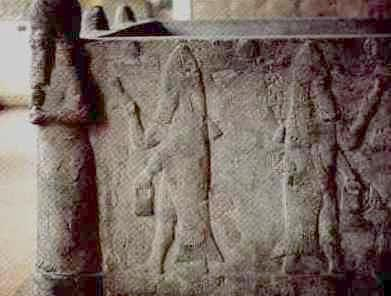
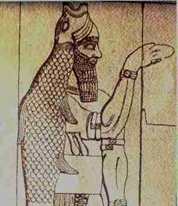
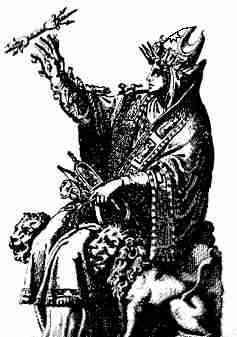

|  | Here you see a stone laver from Assyria which is now in the Pergamum Museum in Berlin. Carved on its sides are depictions of pagan priests that appear to be half sun-fish and half man, that are sprinkling holy water. |
Again, here is a similar depiction of a pagan priest wearing a
sun-fish, the head with open mouth worn as a mitre and the rest of
the fish forming a cloak. These are both illustrations of Dagon,
which was the God of Babylon and Philistia and is mentioned several
times in scripture in
|
 |
|  | Note the mitre on the head of this drawing of the goddess Cybele and the striking similarity to the fish head of Dagon. Cybele was worshipped in Rome and was also called the "Magna Mater", or the great queen mother goddess, which evolved into Catholic Mariology. The priesthood of Cybele was composed of castrated males, which parallels the celibate priesthood of Catholicism. The basilica of Saint Peter's, according to some, stands upon the former site of Cybele's main temple in Rome. The ruins of another temple to Cybele / Magna Mater can still be seen today in Rome on Palatine hill. |
See these pages for more information.
 JBL Statues
JBL Statues
 The Cult of
Magna Mater
The Cult of
Magna Mater
 The Sibyl and
Cybele Oracles.
The Sibyl and
Cybele Oracles.